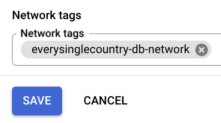

Deploy a PostgreSQL Database on GCP Compute Engine
This guide walks you through deploying a PostgreSQL database on Google Cloud Platform’s (GCP) Compute Engine. We will create a Virtual Machine (VM), install PostgreSQL, and configure it for remote access.
Why Compute Engine?
Important Note: While Compute Engine is included in GCP’s Free-Tier, the recommended approach for production databases is to Enable Cloud SQL Database. Cloud SQL is a fully managed database service offering features like high availability, automated backups, and simplified scaling.
However, deploying PostgreSQL on Compute Engine is ideal for: - Learning the basics of managing a database. - Small projects or Minimum Viable Products (MVPs). - Utilizing GCP’s Free-Tier resources effectively.
Prerequisites
Before starting, ensure you have:
Now, let’s dive into deploying your PostgreSQL database on GCP Compute Engine!
Step 1: Create a Virtual Machine (VM) on GCP
- Log in to the Google Cloud console and open the Navigation menu (three horizontal lines icon).

- Select “Compute Engine”.
- Click on “CREATE INSTANCE”.
- Enter the VM “Name” and choose the “Region”. Ensure you select a Free-Tier eligible region, such as “us-central1”, “us-east1”, or “us-west1”.
- Set the “Machine Type” to “e2-micro”, which is the only Free-Tier eligible option.
- Click “CREATE”.
- Wait for the VM to be created (indicated by a green checkmark) and then click on the name of your VM (e.g., “everysinglecountry-db” in this example) to view its details.
With the VM successfully created, the next step is to configure it for remote access.
Step 2: Configure the VM for Remote Access
- Click “EDIT”.

- Under “Network tags”, add a tag (e.g., “everysinglecountry-db-network”) and click “SAVE”. This tag will be used later to set up a firewall rule for external access to the VM.

- Return to the previous panel by clicking “Compute Engine”.
- Click “Set up firewall rules” to create a rule for external access.
- Click on “CREATE FIREWALL RULE”.
- Enter a “Name” for your firewall rule (e.g., “everysinglecountry-db-firewall-rule”).
- Set the “Target tag” to the same value as the network tag specified in step 9 (e.g., “everysinglecountry-db-network”).
- In “Source IPv4 ranges”, enter “0.0.0.0/0” to allow access from any IP. Alternatively, if you know the specific IP range you will use, enter that instead for improved security.
- Enable “TCP”, and set the “Ports” field to “5432” (default for PostgreSQL connections).
- Click “CREATE” to save and apply the firewall rule.
- Return to the “Compute Engine” section, following steps 1 and 2 from earlier.
- Note down the VM’s “External IP”, as you will use it to connect to the database later.

You have now successfully enabled remote access to your VM on port 5432. Next, we will install and configure PostgreSQL on the VM. The process involves copying and pasting several commands into the VM terminal, a brief explanation for each executed command is provided.
Step 3: Install and Configure PostgreSQL
- Click on “SSH” to access your VM through an SSH session.
- Run the following commands in the VM’s terminal.
Install PostgreSQL on the VM:
# Update the package lists for upgrades and new package installations.
$ sudo apt update
# Install PostgreSQL and its additional utilities.
$ sudo apt install -y postgresql postgresql-contrib
# Clean up the local repository of retrieved package files to save space.
$ sudo apt-get clean
# Remove cached package lists to ensure fresh metadata for future updates.
$ sudo rm -rf /var/lib/apt/lists/*Verify Installation and Set Password for the postgres User:
# Check the status of the PostgreSQL service to verify if it's running.
$ sudo systemctl status postgresql
# Switch to the 'postgres' user and open the PostgreSQL interactive terminal.
$ sudo -u postgres psql
# Inside the PostgreSQL terminal, set a password for the 'postgres' user.
postgres=# \password postgres
ENTER_YOUR_PASSWORD
# Exit PostgreSQL.
postgres=# \qEnable Access to the Database:
# Back up the current PostgreSQL configuration file.
sudo cp /etc/postgresql/15/main/postgresql.conf /etc/postgresql/15/main/postgresql.conf_bak
# Modify the configuration file to allow connections from any IP address.
sudo sed -i "s/^#listen_addresses = .*/listen_addresses = '*'/g" /etc/postgresql/15/main/postgresql.conf
# Back up the current pg_hba.conf file (PostgreSQL client authentication configuration).
sudo cp /etc/postgresql/15/main/pg_hba.conf /etc/postgresql/15/main/pg_hba.conf_bak
# Add a rule to allow password authentication for all users from all IPs.
echo "host all all 0.0.0.0/0 md5" | sudo tee -a /etc/postgresql/15/main/pg_hba.conf
# Restart the PostgreSQL service to apply the configuration changes.
sudo systemctl restart postgresqlYou can now close the SSH terminal.
At this stage, your PostgreSQL database is up and running, configured to accept external connections. Anyone with the correct username and password can access it. You’re now ready to connect to your database in R!
Step 4: Connect to the Database from R
To connect to your PostgreSQL database from R, you can use the {DBI} package along with the PostgreSQL driver. Below is an example:
cn <- DBI::dbConnect(
drv = RPostgres::Postgres(),
dbname = "postgres",
host = "34.28.198.207", # Change with your VM's External IP (as in step 19).
user = "postgres",
password = "YOUR_POSTGRES_PWD", # Change with your password for postgres user (as set in step 21).
port = 5432
)
DBI::dbListTables(cn)
DBI::dbDisconnect(cn)Conclusion
Deploying PostgreSQL on a GCP Compute Engine instance is a practical way to gain hands-on experience in managing databases and making the most of GCP’s Free-Tier offerings. For production environments, we highly recommend exploring Cloud SQL Database for enhanced scalability, automated backups, and easier maintenance.
We hope you found this guide helpful! Share your experiences, ask questions, or let us know about your success stories in the comments below. Happy coding!